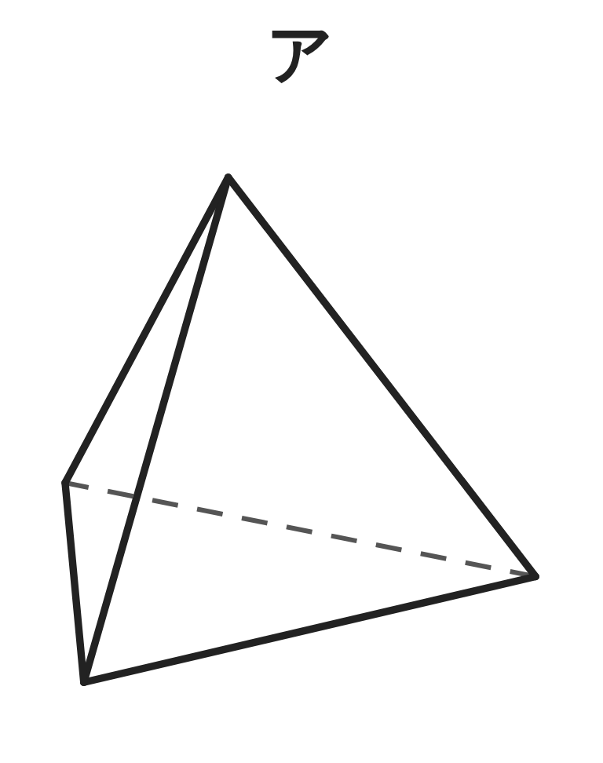
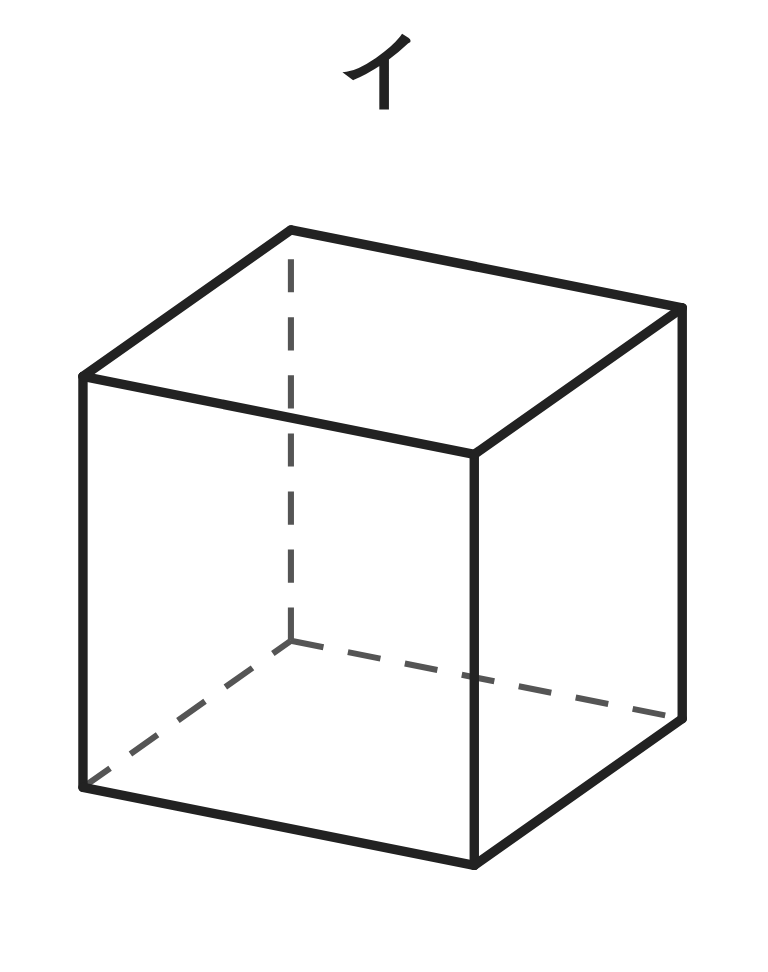
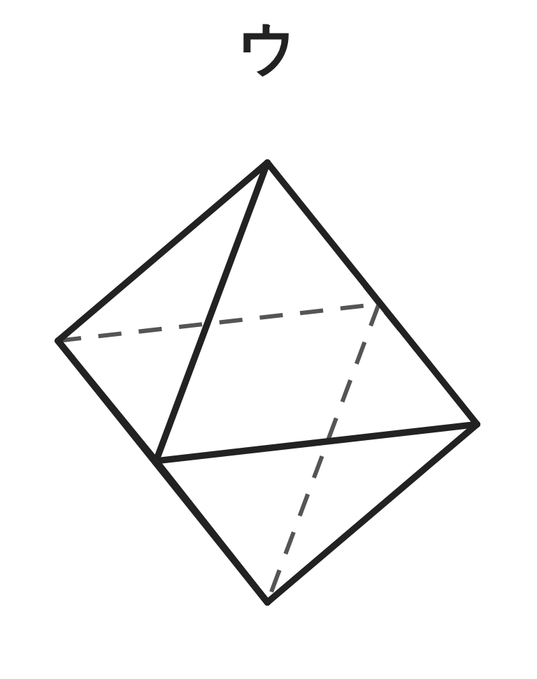
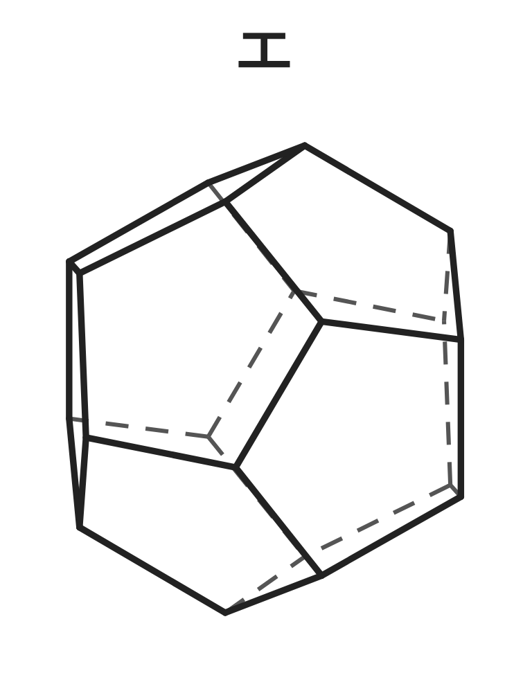
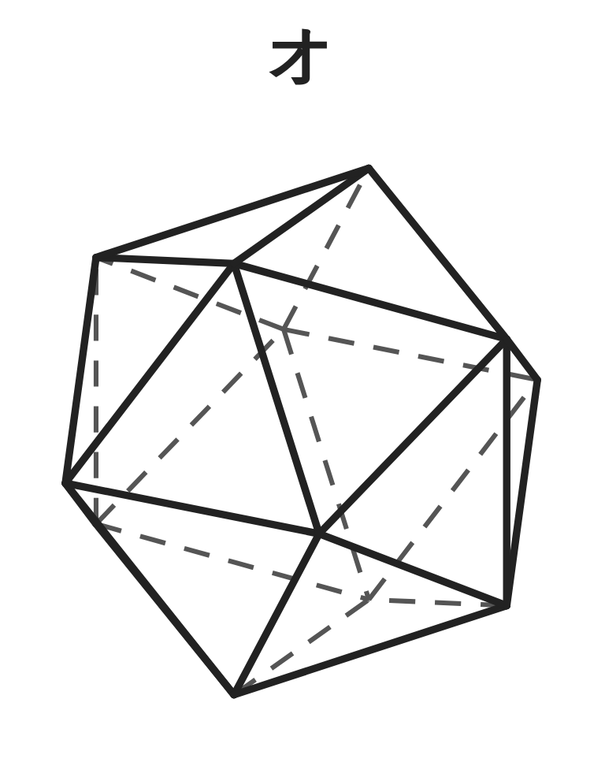
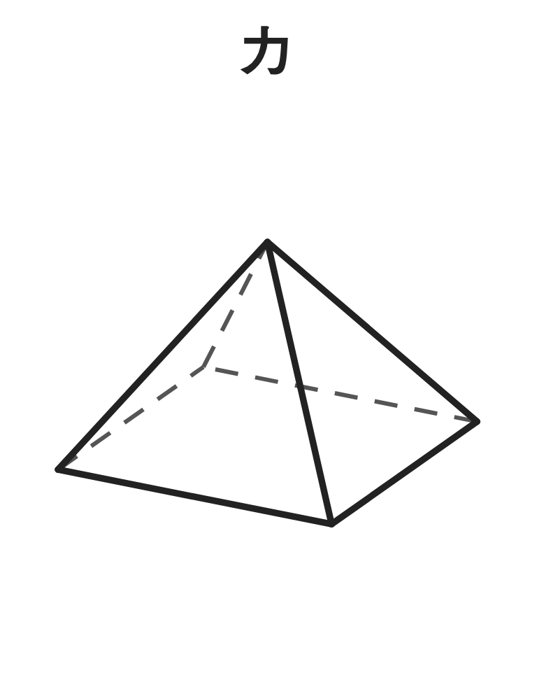

ペア学習
第2時 正多面体をつくって、頂点・辺・面の数を調べよう
第1時の重要語句から、1人1問ずつ、言葉を選んで出題する。
聞かれた人は、その言葉の意味を、自分の言葉で言う。
底面
側面
角柱
円柱
角錐
円錐
多面体
空間図形 第2時 正多面体をつくって、頂点・辺・面の数を調べよう
めあて
第2時 正多面体をつくって、頂点・辺・面の数を調べよう
学習課題
ア〜オの立体にあって、カにない特徴を見つけよう。






【見つけた特徴】ア〜オに共通する特徴を書こう。【カがちがうところ】も書こう。
空間図形 第2時 正多面体をつくって、頂点・辺・面の数を調べよう
学習課題のまとめ
第2時 正多面体をつくって、頂点・辺・面の数を調べよう
ア〜オの立体にあって、カにない特徴を見つけよう。
見つけた特徴（例）
どの面も、同じ形で同じ大きさ（合同な正多角形）
どの頂点にも、同じ数の面が集まっている
へこみがない
カがちがうところ
カ … 面の形がちがう（正方形と正三角形）。
頂点に集まる面の数も、そろっていない。
空間図形 第2時 正多面体をつくって、頂点・辺・面の数を調べよう
ことば
第2時 正多面体をつくって、頂点・辺・面の数を調べよう
どの面も合同な で、
どの頂点にも の面が集まる、
へこみのない多面体を、 という。
正多面体は、全部で 種類しかない。
空間図形 第2時 正多面体をつくって、頂点・辺・面の数を調べよう
ことば
第2時 正多面体をつくって、頂点・辺・面の数を調べよう
どの面も合同な正多角形で、
どの頂点にも同じ数の面が集まる、
へこみのない多面体を、正多面体という。
正多面体は、全部で5種類しかない。
空間図形 第2時 正多面体をつくって、頂点・辺・面の数を調べよう
例題
第2時 正多面体をつくって、頂点・辺・面の数を調べよう
5つの正多面体について、表を完成させよう。
| 正多面体 | 正四面体 | 正六面体 | 正八面体 | 正十二面体 | 正二十面体 |
|---|---|---|---|---|---|
| 面の形 | 正三角形 | ||||
| 面の数 | 4 | ||||
| 1つの頂点に集まる面の数 | 3 | ||||
| 辺の数 | 6 | ||||
| 頂点の数 | 4 |
【数えにくいとき】正十二面体の、辺の数と頂点の数を、数えずに求めよう。
空間図形 第2時 正多面体をつくって、頂点・辺・面の数を調べよう
例題 解答
第2時 正多面体をつくって、頂点・辺・面の数を調べよう
| 正多面体 | 正四面体 | 正六面体 | 正八面体 | 正十二面体 | 正二十面体 |
|---|---|---|---|---|---|
| 面の形 | 正三角形 | 正方形 | 正三角形 | 正五角形 | 正三角形 |
| 面の数 | 4 | 6 | 8 | 12 | 20 |
| 1つの頂点に集まる面の数 | 3 | 3 | 4 | 3 | 5 |
| 辺の数 | 6 | 12 | 12 | 30 | 30 |
| 頂点の数 | 4 | 8 | 6 | 20 | 12 |
辺 … 面は正五角形が 12。辺は、のべ 5×12＝60（本）
1本の辺は 2つの面に共通だから 60÷2＝30（本）
頂点 … のべ 5×12＝60（個）
1つの頂点に 3つの面が集まるから 60÷3＝20（個）
空間図形 第2時 正多面体をつくって、頂点・辺・面の数を調べよう
考えよう
第2時 正多面体をつくって、頂点・辺・面の数を調べよう
①
カードを、1つの頂点に集めて、立体になるか調べよう。（正三角形）
②
ほかの形のカードでも、調べよう。（正方形・正五角形・正六角形）
③
立体になるときと、ならないときは、何がちがうだろう。
気づいたことを書こう。
立ち歩いて、教え合おう。
ゴールは、考えようを、全員が説明できること。
発展 演習まで解き終わった人は、考えてみよう！
正多面体が 5種類しかないのは、なぜだろう。
空間図形 第2時 正多面体をつくって、頂点・辺・面の数を調べよう
振り返り
第2時 正多面体をつくって、頂点・辺・面の数を調べよう
今日のめあて
正多面体
正多角形
正四面体
正六面体
正八面体
正十二面体
正二十面体
今日わかったことを、ペアで1つずつ言い合おう。
ワークシートと演習プリントを出そう。（未完成でも出す）
空間図形 第2時 正多面体をつくって、頂点・辺・面の数を調べよう